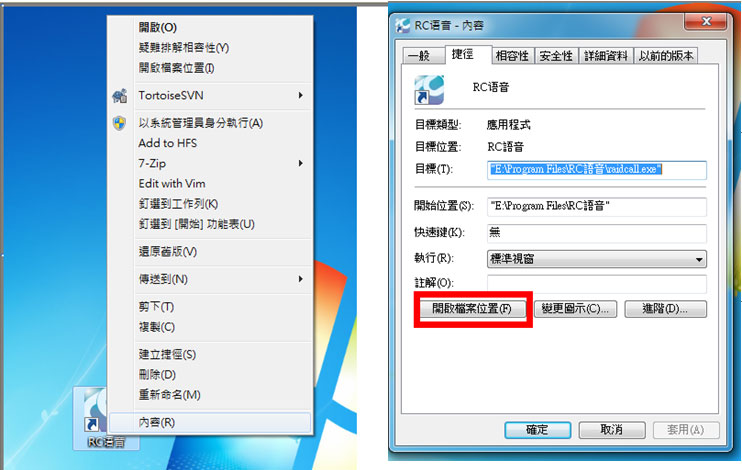
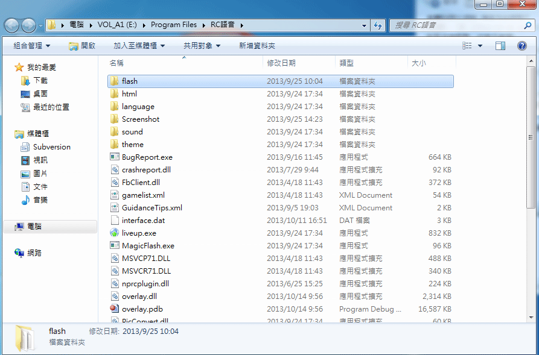
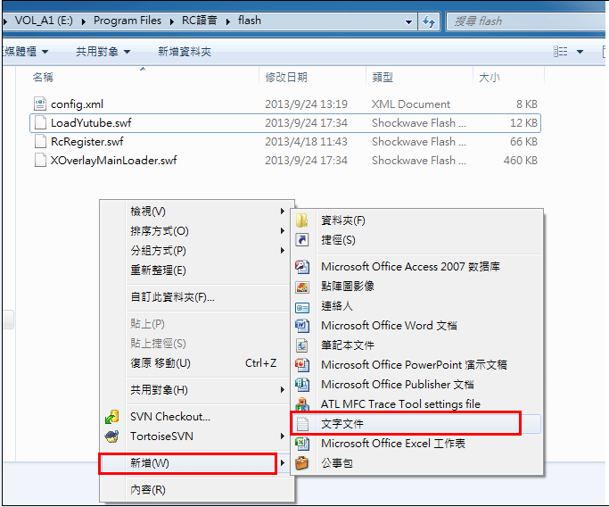
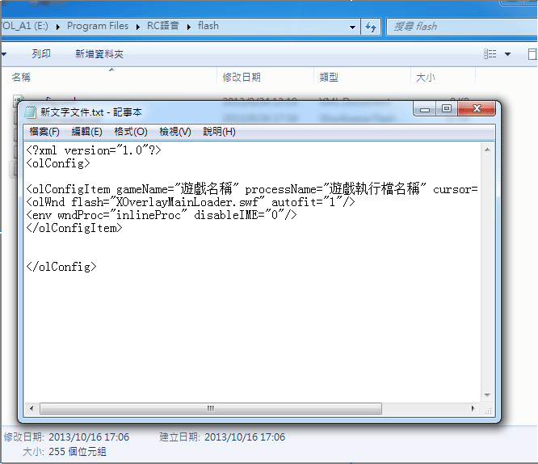
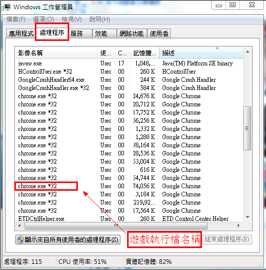
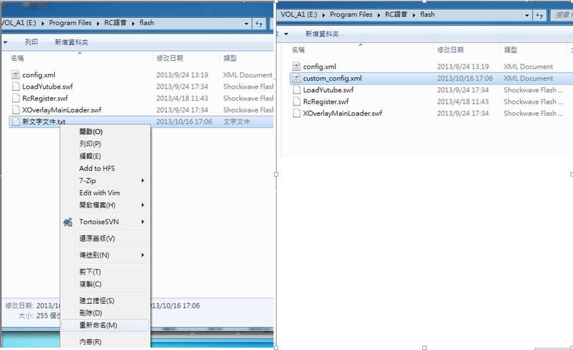
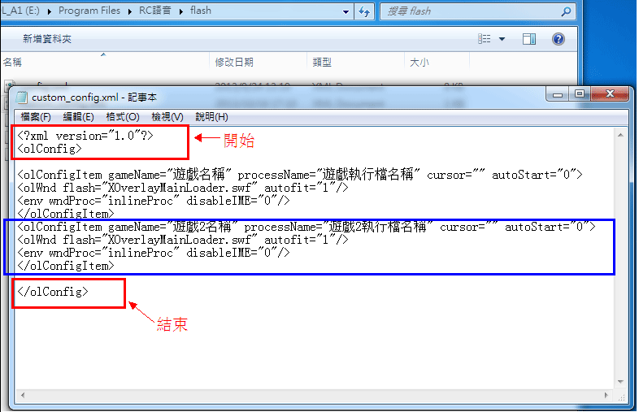
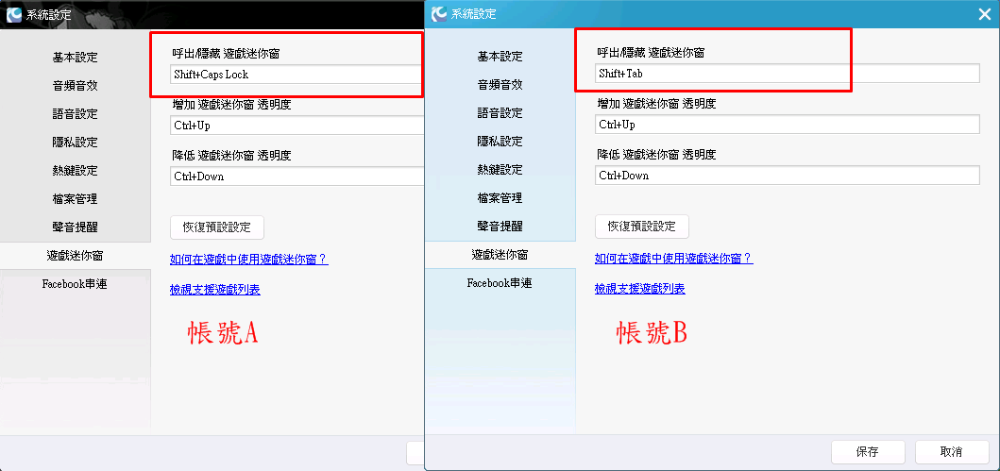
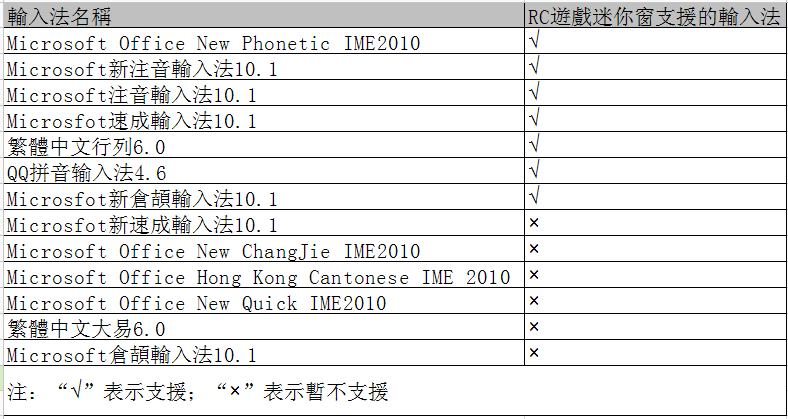
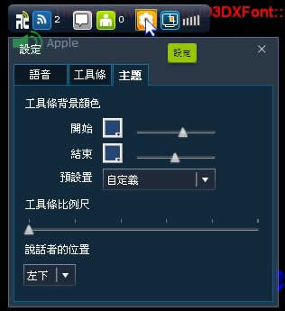

1.RC游戏迷你窗是什么？
RC游戏迷你窗是RC语音发布的基于各游戏可视化开发的内嵌语音功能，方便玩家避免频繁切换游戏萤幕，带来更加高效灵活的沟通体验。游戏中的RC游戏迷你窗有五个按键，从左至右分别为语音群-频道聊天室-好友-设定-截图。在游戏中呼出RC游戏迷你窗，可以让你的游戏世界变得更精彩！
2.RC游戏迷你窗支援的游戏有哪些？
| 线上游戏 | |
|---|---|
| 遗落幻境 | 剑侠Q传 |
| 英雄联盟League of Legends | 幻想神域Online |
| Cross Fire 穿越火线 | 战锤Online：决战世纪 |
| 圣境传说Online | Final Fantasy XIV：新生艾奥杰亚 |
| Operation 7 | 绝对武力：全球攻势 |
| DOTA 2 | 天子传奇Online |
| 战车世界World of Tanks | 激战2（Guild Wars 2 ） |
| 单机游戏 | |
| 当个创世神（Minecraft） | 星海争霸2 |
| 恶魔猎人4 | 《极地战嚎3》 |
| 决胜时刻：黑色行动2 | 极速快感：亡命天涯 |
| 《黑街圣徒3》 | 文明帝国5：神与王 |
| 泰坦任务 | 泰坦任务：不朽王座 |
| 决胜时刻4：现代战争 | 烽火家园 |
| 侠盗猎车手：圣安地列斯 | 战地风云：恶名昭彰2 |
| 决胜时刻9 | Oil Rush |
| 古墓奇兵9 | |
"RC游戏迷你窗暂时只支援以上游戏的32位元，如果您发现目前RC游戏迷你窗暂不支援您所玩的游戏，可以向RC提出支援游戏申请。RC语音会竭诚为您解决。"
3.如何在支援游戏裹面呼出RC游戏迷你窗？
系统预设的呼出RC游戏迷你窗功能的热键为SHIFT+TAB，如果要在游戏中使用RC游戏迷你窗，您需要在软体中启用此功能。打开软体视窗，点选视窗左上方的RC 语音—系统设定—RC游戏迷你窗设定，即可设定RC游戏迷你窗热键、透明度、自动呼出等功能。
4.RC游戏迷你窗支援自定义游戏的设定教学
1、点选桌面上RC语音捷径> 滑鼠右键> 内容> 捷径> 开启档案位置

2、开启"flash"资料夹，点击滑鼠右键> 新增> 文字文件


3、开启新增的文字记事本， 复制以下的代码贴上记事本。
<?xml version="1.0"?>
<olConfig>
<olConfigItem gameName="游戏名称" processName="游戏执行档名称.exe" cursor="" autoStart="0">
<olWnd flash="XOverlayMainLoader.swf" autofit="1"/>
<env wndProc="inlineProc" disableIME="0"/>
</olConfigItem>
</olConfig>
将代码里面的"游戏名称"和"游戏执行档名称"修改为自己的游戏名称和游戏执行档名称，并储存档案。


4、点选新文字文件> 滑鼠右键> 重新命名。将文字文件为""custom_config.xml "。 最后重新开启RC语音即可，使用RC游戏迷你窗呼出热键：SHIFT+TAB 呼出RC游戏迷你窗。

5、非首次新增自定义游戏的玩家请在RC语音安装路径的flash资料夹内找到"custom_config.xml"文件，以记事本方式开启。复制以下代码，把代码贴在结束语的前面（如图篮框的代码）
<olConfigItem gameName="游戏2名称" processName="游戏2执行档名称.exe" cursor="" autoStart="0">
<olWnd flash="XOverlayMainLoader.swf" autofit="1"/>
<env wndProc="inlineProc" disableIME="0"/>
</olConfigItem>
并把"游戏2名称"和"游戏2执行档名称"修改为自己的游戏名称和游戏执行档名称，储存档案。

最后重新开启RC语音即可使用RC游戏迷你窗快呼出热键：SHIFT+TAB 呼出RC游戏迷你窗。
5.多开RC时如何准确在游戏裹面呼出相对应的RC账号？
开启2支以上的RC，可以通过设定快捷键的方式在游戏里面准确呼出相对应的RC账号。例如A跟B ，想用B帐号开启RC游戏迷你窗，只要在游戏内开启B帐号的RC游戏迷你窗热键：Shift+Tab即可，图示如下：

6.RC游戏迷你窗支援的输入法
目前RC游戏迷你窗在游戏里面支援台湾大部份热门的输入法。列表如下：

7.怎么设定RC游戏迷你窗的主题？
在游戏中呼出RC游戏迷你窗功能后，点击RC游戏迷你窗中的'设定'图标，即可选择自己喜欢的主题颜色。

8.怎样在RC游戏迷你窗模式下使用截图功能？
在游戏中启用RC游戏迷你窗功能后，点击RC游戏迷你窗中的'截图'图标，按住滑鼠左键拖动，选择区域截取图片。